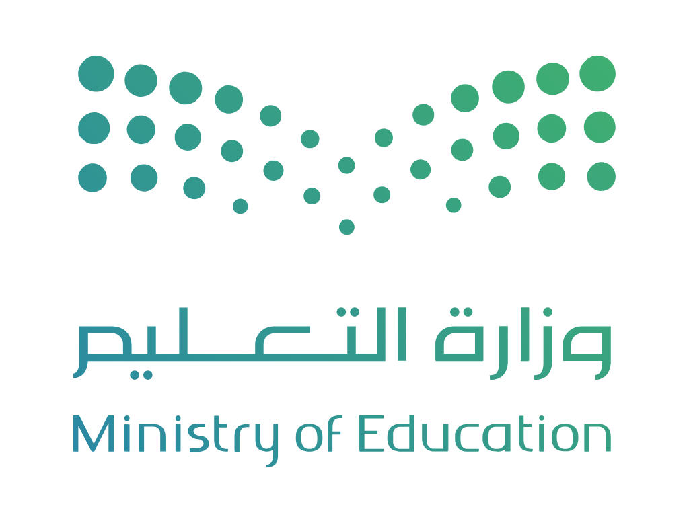

أنجز
← الرئيسية
الزيارات الصفية
اسم المدرسة
مدير/ة المدرسة
المعلم الزائر
حذف
+ إضافة معلم زائر
المعلم الذي تمت زيارته
المادة
الصف
موضوع الدرس
اليوم
الأحد
الاثنين
الثلاثاء
الأربعاء
الخميس
التاريخ الهجري
الحصة
الأولى
الثانية
الثالثة
الرابعة
الخامسة
السادسة
السابعة
أهداف الزيارة
الممارسات والمميزات الملحوظة
أبرز جوانب الاستفادة
التوصيات
إنشاء التقرير

تقرير
الزيارات الصفية
المملكة العربية السعودية
وزارة التعليم
المدرسة
—
التاريخ الهجري
—
اليوم / الحصة
—
المادة / الصف
—
بيانات الزيارة
المعلم الزائر
المعلم الذي تمت زيارته
موضوع الدرس
أهداف الزيارة
الممارسات والمميزات الملحوظة
أبرز جوانب الاستفادة
التوصيات
المعلم الذي تمت زيارته
........................
مدير/ة المدرسة
........................
حفظ PDF A4
طباعة
‹
›
أحد
اثن
ثلا
أرب
خمي
جمع
سبت
إغلاق